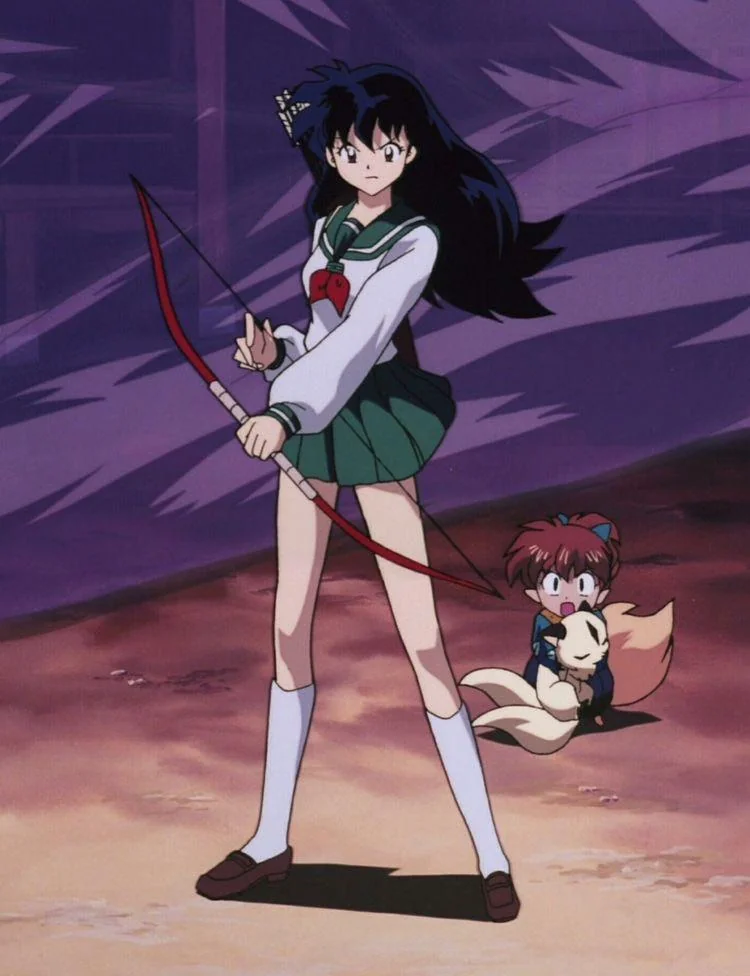

Kagome Higurashi é a protagonista feminina do anime e mangá InuYasha, criado por Rumiko Takahashi. Ela é uma adolescente japonesa do século XX que, ao cair em um antigo poço no santuário de sua família, é transportada para o Japão feudal. Lá, descobre que é a reencarnação de uma poderosa sacerdotisa chamada Kikyo e se envolve na busca pelos fragmentos da Joia de Quatro Almas ao lado do meio-youkai InuYasha. Com um coração gentil, forte senso de justiça e coragem notável, Kagome é peça-chave na história, tanto emocional quanto narrativamente.
Kagome Higurashi é uma estudante comum do ensino médio que vive em Tóquio com sua família, que administra um antigo santuário. Sua vida muda drasticamente no dia de seu 15º aniversário, quando é puxada para dentro de um poço mágico localizado no templo e transportada para o período Sengoku, no Japão feudal. Lá, ela descobre que é a reencarnação da sacerdotisa Kikyo e que carrega dentro de si a poderosa Joia de Quatro Almas.
Ao liberar sem querer a joia e vê-la se despedaçar em vários fragmentos, Kagome se une ao hanyou InuYasha para recuperar os pedaços espalhados pelo mundo. Ao longo da jornada, ela conhece e forma laços com diversos aliados, enfrenta inúmeros perigos e cresce tanto emocional quanto espiritualmente. Com o tempo, seu relacionamento com InuYasha se aprofunda, e ela passa a lidar com questões de destino, amor, identidade e sacrifício.
Sensibilidade espiritual: Ela consegue sentir a presença de youkais, pessoas com intenções malignas e fragmentos da Joia de Quatro Almas.
>Flechas purificadoras: Kagome é capaz de imbuir suas flechas com energia espiritual pura, que pode purificar ou destruir seres corrompidos.
Barreiras protetoras: Em momentos de necessidade, ela manifesta defesas espirituais que protegem a si mesma ou aos outros.
Resistência à manipulação demoníaca: Sua força de vontade e pureza interior a tornam resistente a possessões e influências negativas.
🫶 Empatia e Compaixão: Kagome é marcada por sua profunda empatia, sempre disposta a ajudar os outros, mesmo em situações perigosas. Ela demonstra compaixão tanto por aliados quanto por inimigos, muitas vezes buscando caminhos que evitem a violência.
🧗♀️ Coragem e Determinação: Mesmo diante de perigos constantes no mundo feudal, Kagome nunca foge da luta. Ela enfrenta desafios com coragem e determinação, e não hesita em se arriscar para proteger aqueles que ama.
⚔️ Senso de Justiça: Seu senso de justiça é muito forte. Kagome defende firmemente o que acredita ser certo — até mesmo confrontando InuYasha quando necessário, mostrando independência e integridade.
🙃 Teimosia e Impulsividade: Ela também possui um lado teimoso e impulsivo, especialmente quando está emocionalmente envolvida. Isso a torna mais humana e autêntica, gerando momentos cômicos e dramáticos ao longo da série.
🕰️ Equilíbrio entre Épocas: Como uma garota do mundo moderno vivendo no passado, Kagome constantemente questiona os costumes do Japão feudal, oferecendo uma perspectiva diferente e muitas vezes mais sensível às questões sociais da época.
🚀 Evolução e Protagonismo: Ao longo da história, Kagome passa de uma adolescente comum e assustada para uma heroína poderosa. Sua jornada é de amadurecimento, descobertas e superação, tornando-se uma peça fundamental na derrota de Naraku e na restauração da paz.
🧺 O nome “Kagome” é inspirado no padrão “kagome kagome”, uma forma geométrica usada em cestos de bambu e também é referência a uma cantiga infantil japonesa.